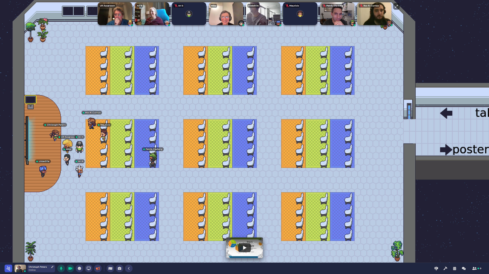

I3D 2022 is a fully virtual conference. This page explains how to participate.
Registration is free. Please complete this registration form. Upon registration, you receive an email giving you access to Discord and Gather.
All presentations get streamed live on YouTube at the times indicated in the program. Most presentations are also available afterwards. Exceptions are marked as “live presentation only.” The stream will also feature a tour of all posters. The town hall and social events are not part of the stream.
Each session has its own channel on our Discord server. You can post your questions there any time. Each keynote and papers session ends with approximately 15 minutes of live Q&A where the session chair asks the presenters questions from Discord. Of course, discussions can continue after the session. Discord also supports direct messages and video calls.
Please use your real name, not a nickname. You can change your display name for the I3D server only by following these instructions.
To facilitate more direct interactions throughout the conference, we offer Gather. Get help here. In our virtual conference space, you can talk to anyone standing nearby (or in the same private space) with voice, video and/or text. Posters and demos get presented on Gather. If you want some company while watching the YouTube stream, you can take a seat in the virtual auditorium. Gather is also the starting point for all social events. And we encourage all presenters to be available for questions on Gather in the breaks after their sessions.

The town hall is a Zoom meeting and is not streamed or recorded. The invite will be posted on Discord.